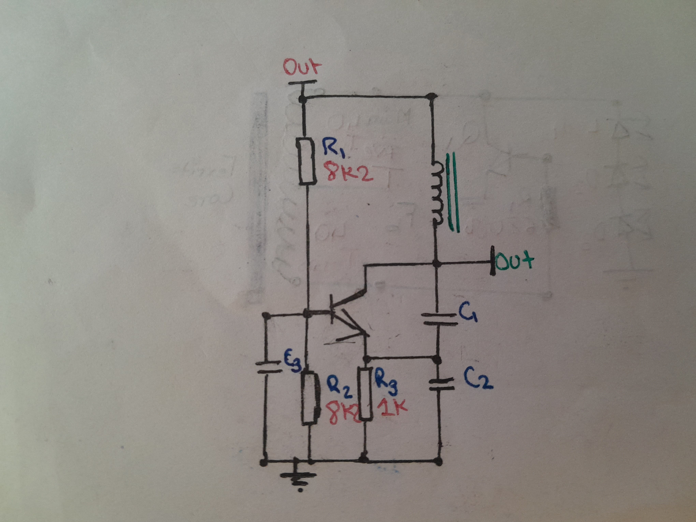
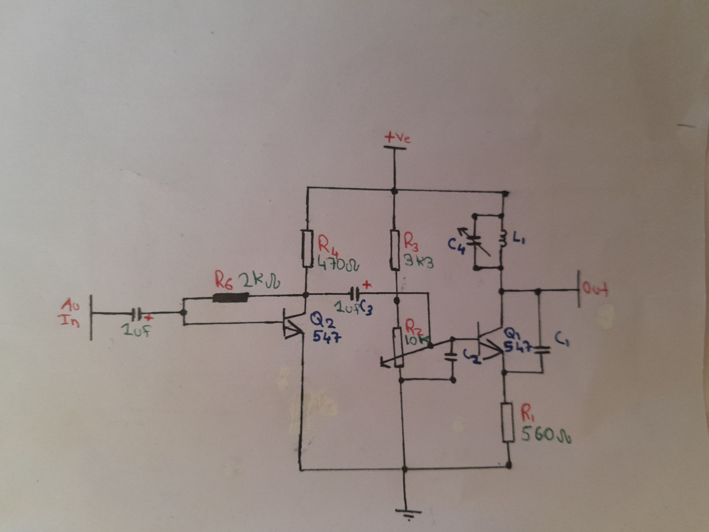

Article- AM Tx
This is a simple amplitude modulation (AM) transmitter, It contains two transistors. It has two stages, Here is how it works-
The first stage is a simple amplifier, it might have some distortions or may be very bad. So you can add another amplifier yourself. Talking about the second
stage is a Colpitts oscillator plus a modulator, I was looking for a modulator and tested some circuits which failed to modulate the carrier wave. The transistor
used in the Colpitts oscillator is always in an ON state, so connecting a potentiometer and lowering the base current opens or makes the transistor to conduct
less which lowers the current at the collector which reduces the amplitude of the LC circuit. Now providing some audio or whatever signal at the base makes
the transistor
conductive at the positive region and less conductive at the negative region of the signal, "It is an NPN transistor ". Since a capacitor is connected
at the emitter of the transistor which somehow manages to make the transistor oscillate, So the carrier signal also modulates with the input signal. The frequency
depends on the inductor and the capacitor in the circuit, Which you can calculate by this equation-.

Colpitts oscillator schematic-

AM Tx schematic-

Note i don't know the range of the transmitter